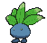
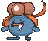
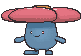

O Oddish usou seu ataque de cipó e enraizou-se por toda a lateral esquerda do habitat 2x2! Ele deve ocupar a primeira coluna inteira (as 2 linhas verticalmente). Seus companheiros Gloom e Vileplume se organizam na segunda coluna, um em cada linha.


